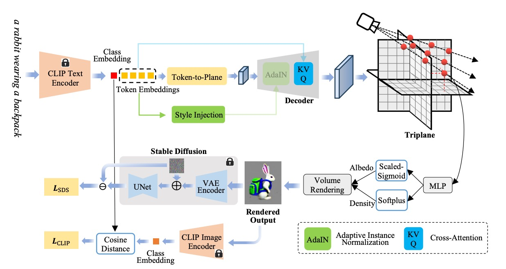

Text-to-3D generation, which aims to synthesize vivid 3D objects from text prompts, has attracted much attention from the computer vision community. While several existing works have achieved impressive results for this task, they mainly rely on a time-consuming optimization paradigm. Specifically, these methods optimize a neural field from scratch for each text prompt, taking approximately one hour or more to generate one object. This heavy and repetitive training cost impedes their practical deployment. In this paper, we propose a novel framework for fast text-to-3D generation, dubbed Instant3D. Once trained, Instant3D is able to create a 3D object for an unseen text prompt in less than one second with a single run of a feedforward network. We achieve this remarkable speed by devising a new network that directly constructs a 3D triplane from a text prompt. The core innovation of our Instant3D lies in our exploration of strategies to effectively inject text conditions into the network. In particular, we propose to combine three key mechanisms: cross-attention, style injection, and token-to-plane transformation, which collectively ensure precise alignment of the output with the input text. Furthermore, we propose a simple yet effective activation function, the scaled-sigmoid, to replace the original sigmoid function, which speeds up the training convergence by more than ten times. Finally, to address the Janus (multi-head) problem in 3D generation, we propose an adaptive Perp-Neg algorithm that can dynamically adjust its concept negation scales according to the severity of the Janus problem during training, effectively reducing the multi-head effect. Extensive experiments on a wide variety of benchmark datasets demonstrate that the proposed algorithm performs favorably against the state-of-the-art methods both qualitatively and quantitatively, while achieving significantly better efficiency.
Comparison of existing SOTA methods with our proposal. Existing methods optimize a randomly initialized NeRF from scratch for each text prompt, which usually requires more than 10,000 iterations, taking hours to converge. In contrast, our approach is designed to learn a text-conditioned NeRF, which takes much less training computational cost and has strong generalization ability on new prompts. It is able to generate a conditional 3D representation (triplane) of a 3D object for an unseen text prompt in one single pass of a feedforward network, taking about 25ms.
Overview of the proposed Instant3D, which applies a conditional decoder network to map a text prompt to a corresponding triplane. Three condition mechanisms, i.e., cross-attention, style injection, and token-to-plane transformation, are seamlessly combined to bridge text and 3D, tackling the issue of weak supervision from SDS. Given a random camera pose, a 2D image is rendered from the conditioned triplane through coordinate-based feature sampling, point density and albedo prediction, and differentiable volume rendering. For albedo activation, we propose a scaled-sigmoid function, effectively accelerating the training convergence. During training, the view image is first diffused by adding random noise and then fed into a pretrained UNet conditioned on the text prompt for denoising, which provides the gradient of the SDS loss. We also present an adaptive Perp-Neg algorithm to better solve the Janus problem in our framework. During inference, our Instant3D can infer a faithful 3D object from an unseen text prompt in less than one second.
@article{li2023instant3d,
title = {Instant3D: Instant Text-to-3D Generation},
author = {Li, Ming and Zhou, Pan and Liu, Jia-Wei, and Lin, Min and Keppo, Jussi and Yan, Shuicheng and Xu, Xiangyu},
journal = {preprint},
year = {2023},
}